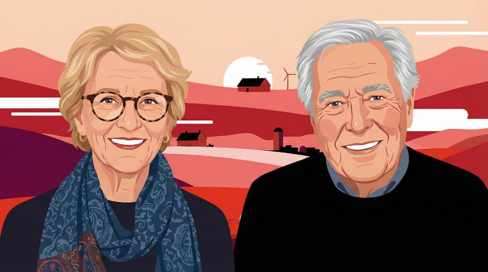
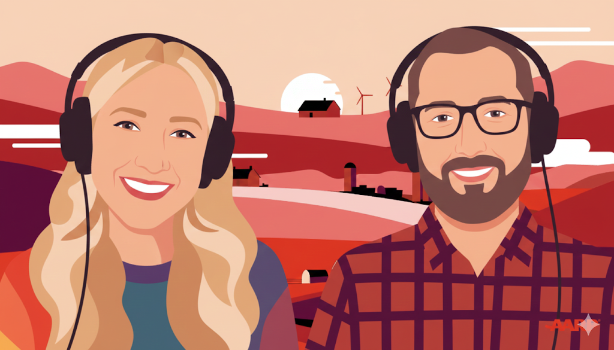
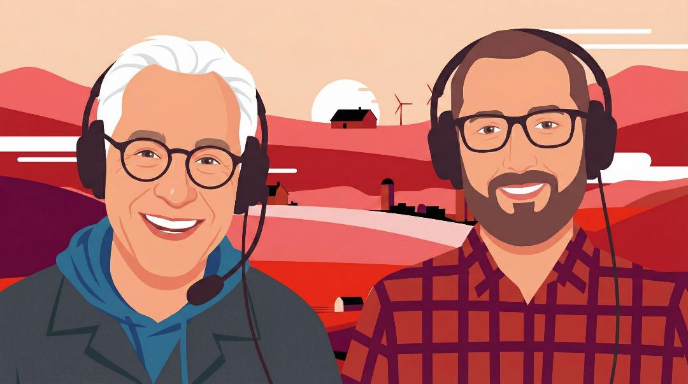
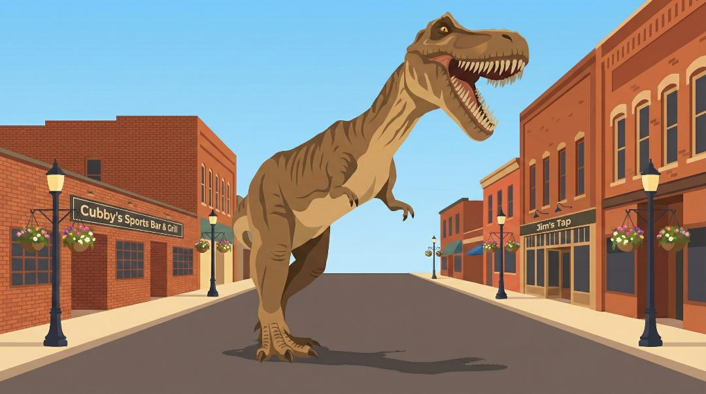

Watch episodeA Love Letter to the Midwest
James and Deborah Fallows join Scott Siepker for a conversation about listening, neighbors, and civic renewal.
Branded podcast and documentary series
LMC created Porching from the ground up for AARP: a complete podcast identity, four original episodes, and an expandable platform built around real conversations from the Heartland.

Overview
The assignment went far beyond producing a podcast. LMC developed the visual identity, episode system, digital experience, graphics, music, sound design, and complete production workflow—then carried that world through three host-led conversations and an on-location documentary.
Selected film
Featured documentary · Episode 4
Four-part series

Watch episodeJames and Deborah Fallows join Scott Siepker for a conversation about listening, neighbors, and civic renewal.

Watch episodeJane Clauss explores the rituals, resourcefulness, and sense of community that carry people through a Heartland winter.

Watch episodeChris Farrell talks about purpose, unretirement, and building financial confidence in the second half of life.

Watch episodeAn on-location documentary about the people, institutions, and shared spirit that give one South Dakota town its character.
The identity
Porching needed to feel warm, contemporary, and grounded in place without relying on familiar regional clichés. LMC created the name treatment, illustrated visual world, episode graphics, digital experience, and an original musical identity that made the series recognizable before the first conversation began.
The format
The first three episodes paired host Scott Siepker with guests whose expertise opened larger questions about community, winter, purpose, and financial confidence. LMC shaped each episode from recording through edit, giving unscripted conversation a clear arc while preserving the moments that felt spontaneous and human.
The production
LMC handled the complete creative and technical workflow: production, editing, graphics, sound design, music, and final delivery. That end-to-end approach kept the visual and sonic details connected, so every episode felt distinct while remaining unmistakably part of the same series.
The documentary
For the fourth episode, the format expanded into a half-hour documentary filmed on location in Brookings, South Dakota. Interviews with residents, students, and local leaders turned one town into a portrait of how a place sees itself—and showed that the Porching idea could become more than a studio conversation.
The result
The completed project established Porching as a fully realized media property, not simply a set of recordings. One coherent brand could support intimate conversations, original journalism, and documentary storytelling while leaving a clear foundation for future episodes and new locations.